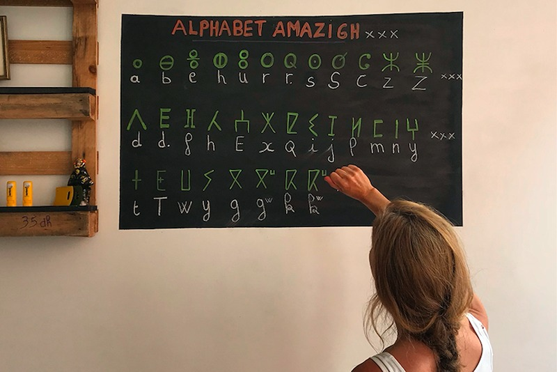
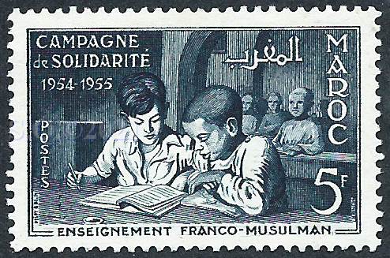

Le Multilinguisme au Maroc
Comme l’introduction a expliqué, au Maroc il y a un système de multilinguisme profond. C’est un pays dans lequel il existe beaucoup de langues avec des statuts sociales diverses.
La première est la langue autochtone, l’amazigh. L’amazigh est commune dans beaucoup de pays de l’Afrique du Nord, et il y a des variations linguistiques entre les régions. Le nom amazigh contient des dialectes et des parlers régionaux aussi. Cette langue indigene est parlé par environ 40% de la population. L’alphabet est appelé «tifinagh.» En 2011, l’amazigh a été reconnu comme langue officielle (avec l’arabe) dans la nouvelle constitution du Maroc.
Le deuxième genre de langue est l’arabe. La langue arabe s’est introduite au Maroc pendant le VIIe siècle. C'était le plus fort dans le nord où il y a eu un processus d’arabisation. Maintenant au Maroc il y a deux formes principales de l’arabe, l’arabe standard et l’arabe dialectal. Environ 65% de la population peut parler l’arabe. L’arabe standard est utilisé dans des situations formels comme le travail, les écoles (sauf l’education supérieure), et la religion. L’arabe dialectal, en revanche, est utilisé dans la vie quotidienne des masses. Aussi appelé le «darija,» cette langue vernaculaire est présente dans des endroits moins formels.
La langue espagnole est introduite au Maroc pendant leur protectorat. Après cette période la langue était plutôt populaire, mais dans les dernières années le taux des parleurs de l’espagnol a vraiment baissé. La présence de l’espagnol est la plus concentrée dans le nord du Maroc parce que c'était une partie du protectorat mais aussi à cause de sa proximité géographique à l’Espagne. Les deux pays sont seulement séparés par le détroit de Gibraltar.
La langue française est l’autre langue coloniale au Maroc. Presque 75 ans après la fin du protectorat, la langue a un rôle très privilégié au Maroc. Le français est encore utilisé pour le travail, le commerce, et dans les secteurs professionnels. De plus, il est nécessaire pour fréquenter l'université, et le français est souvent un symbole d'être instruit parce que c’est enseigné à l'école. Pendant le protectorat il était la langue officielle, mais maintenant il n’a pas de statut officiel. Néanmoins, c’est la langue quotidienne des places professionnelles et fonctionne comme une ‘seconde langue’ pour beaucoup.

